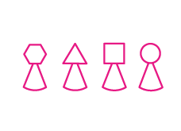
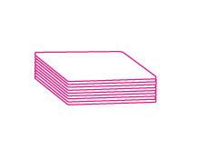
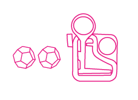
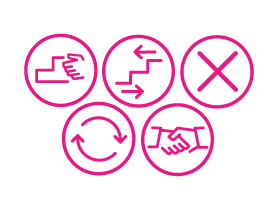

Tablero
El tablero se compone de 4 piezas de forma escalonada, que se ordenan de forma ascendente. La intención es generar una carrera vertical, el objetivo es llegar primero a la cima.


Catapultazo es un juego que reúne de 3 a 4 participantes en una experiencia lúdica. Una carrera de 12 pasos en un tablero piramidal, que se impulsa a través de un mazo de 56 cartas. El recorrido del juego se ve intervenido por casillas y fichas que dictan dinámicas entre jugadores. ¡Cuidado! Que un Catapultazo te puede botar, y tendrás que volver a empezar.
El tablero se compone de 4 piezas de forma escalonada, que se ordenan de forma ascendente. La intención es generar una carrera vertical, el objetivo es llegar primero a la cima.

Elige tu peón al inicio de la partida y posiciónalo en el inicio del tablero.

Contiene un total de 60 cartas, divididas en 3 categorías; Movimiento, Acción, e Interacción. Para iniciar una partida debes barajar el mazo y posicionarlo en el centro de la mesa. Cada turno inicia al sacar una carta del mazo, debes leer en voz alta su efecto y aplicarlo sobre el tablero. Para finalizar el turno, la carta se devuelve a un mazo de descarte.

Los momentos de tensión se activan a través de ¡Catapultazos! El juego contiene 2 catapultas y 2 municiones, las cuales pueden activarse a través de casillas, cartas o fichas. El desafío, puede ser un arma de doble filo, se necesita de la suficiente precisión para derribar los peones de tus compañeros pero evitando generar la caída de tu propio peón.

Las fichas pertenecen a una dinámica que se activa cuando el mazo de cartas otorga una carta "Pozo". Las fichas se guardan en una bolsa semitransparente, del tamaño suficiente para que los jugadores puedan sacar una ficha al azar. Hay 5 tipos de fichas; Congelado, Muévelo, Invasión, Rescate y Equilibrio Cósmico.
A continuación puedes interactuar en un plano 3D
apretando el cursor, haciendo zoom, y rotando en 360°.
En el juego de mesa, los peones, fichas, catapultas y municiones fueron impresas en 3D
en el Laboratorio de Modelado Asistido Digital, también conocido
como "Mad Lab", en la Escuela de Arquitectura y Diseño e[ad].
El argumento del juego, es capturar las expresiones corporales a raíz de las dinámicas sensoriales; Tocar, manipular, observar, calcular. Las reacciones ocurren a través de un proceso de experiencia que involucra un determinado tiempo de compromiso. El compromiso surge cuando la curiosidad mantiene la atención ante estímulos que se activan por la indagación y el accionar calculado.

A continuación se presenta la partitura Pix que documenta la experiencia de juego, el registro de los tiempos y las dinámicas coreográficas de los participantes.
La interacción de Catapultazo ocurre a través de la curiosidad e indagación; la observación tanto visual como manual permite que el cuerpo participe en el desarrollo del juego. Las dinámicas internas de Catapultazo surgen a través de diferentes dimensiones: el azar presente en el mazo de cartas y en las fichas de interacción. La estrategia ocurre en la anticipación de jugadas, por ejemplo con la carta de Pitoniso, o la precisión necesaria ante el cálculo de la distancia y fuerza para derribar los peones de tus contrincantes, guardando proteger el propio peón.